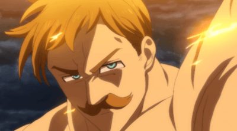
ESCANOR.
Escanor es un miembro de los Siete Pecados Capitales. Su Pecado es el Orgullo junto al símbolo del León.
Leer mas
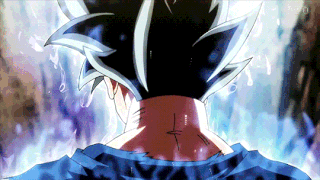
GOKU.
Es un personaje ficticio protagonista del manga y anime Dragon Ball creado por Akira Toriyama. En un inicio Gokū aparece como un joven artista marcial con cola de mono y fuerza sobrehumana, mide 1,65 m y pesa 73kg.
Leer mas
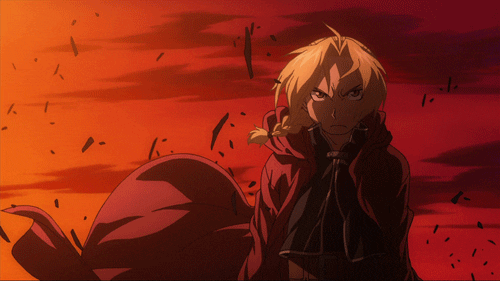
EDWARD.
Edward Elric comúnmente llamado Ed, es el protagonista del manga y anime Fullmetal Alchemist. Edward posee el alias de Alquimista de Acero.
Leer mas

MELIODAS.
Meliodas es el líder de los Siete Pecados Capitales. Él es el protagonista masculino de la historia, su pecado es la Ira y su símbolo el Dragón, también es el propietario del Boar Hat. Hace tres mil años, Meliodas fue el líder de los Diez Mandamientos.
Leer mas
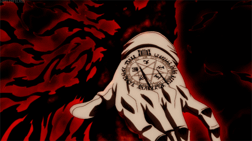
ALUCARD.
Alucard es el protagonista de la serie de manga y anime Hellsing. Es miembro de los Caballeros Protestantes Reales, así como también el arma principal contra otros vampiros y fuerzas sobrenaturales.
Leer mas
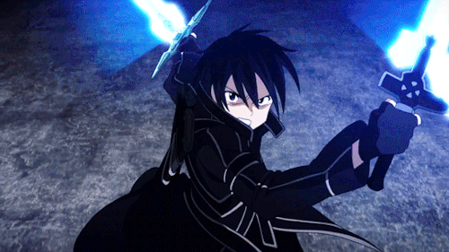
KIRITO.
Kazuto Kirigaya (Kirigaya Kazuto), también conocido como Kirito, cuyo apodo es una contracción de su nombre escrito según la onomástica japonesa es decir Kirigaya Kazuto, es el protagonista de la franquicia Sword Art Online y un ávido jugador de MMOs.
Leer mas
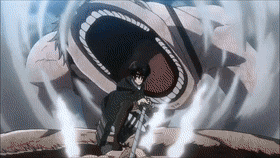
LEVI.
Levi Ackerman (Rivai Akkāman), también referido como Capitán Levi, es el capitán de escuadrón ("líder de los soldados") del escuadrón de operaciones especiales del Cuerpo de Exploración, y es conocido como "el soldado más fuerte de la humanidad".
Leer mas
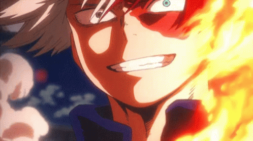
TOKODORI.
El lado derecho del cuerpo de Todoroki tiene poder de hielo y el lado izquierdo es fuego. Este Quirk consiste en crear hielo y fuego de la nada.
Leer mas
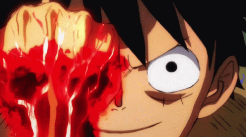
LUFFY.
Luffy nació en la Villa Foosha. Seis años después de su nacimiento, se encontró con una banda de piratas liderados por un capitán pirata llamado "Pelirrojo" Shanks. Luffy se hizo amigo de la banda de piratas y desde ese momento, quería convertirse en un pirata también.
Leer mas
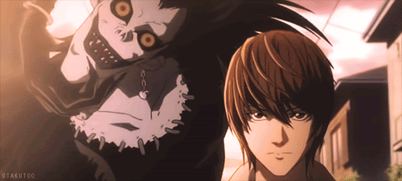
KIRA.
Kira (キラ) es el seudónimo que recibe el poseedor de una Death Note por parte de la opinión pública. Este nombre proviene de la palabra inglesa "killer", que significa asesino.
Leer mas

NARUTO.
Naruto, romanizada como NARUTO, es una serie de manga escrita e ilustrada por Masashi Kishimoto. La obra narra la historia de un ninja adolescente llamado Naruto Uzumaki, quien aspira a convertirse en Hokage, líder de su aldea, con el propósito de ser reconocido como alguien importante dentro de la aldea y entre sus compañeros
Leer mas
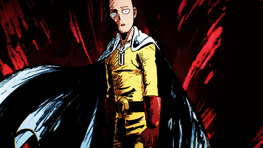
SAITAMA.
Saitama es el protagonista principal de One Punch-Man y el héroe más poderoso. Debido a su condición sobrehumana, Saitama se enfrenta a una crisis existencial, ya que ahora es demasiado poderoso siendo capaz de derrotar a sus oponentes de un solo golpe, por lo que sus batallas las encuentra aburridas y sin emoción.
Leer mas
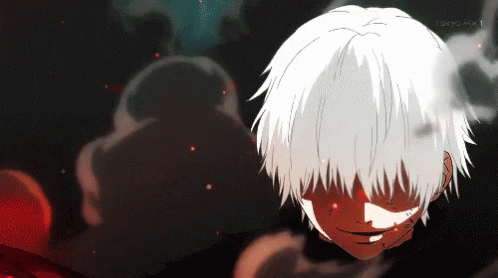
KANEKI.
Ken Kaneki es el protagonista de la serie manga y anime, Tokyo Ghoul. Anteriormente era un estudiante de literatura japonesa en la Universidad Kamii. Su vida cambio después de tener un encuentro con un Ghoul del cual le trasplantaron su órganos, convirtiéndose asi en un Ghoul de un ojo.
Leer mas
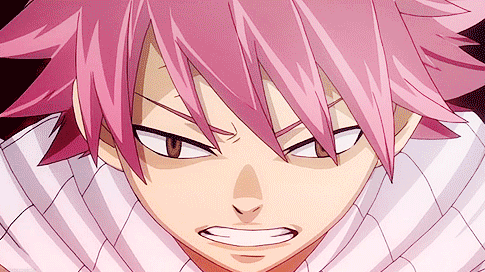
NATSU.
Natsu Dragneel. Es el protagonista masculino del anime y manga Fairy Tail. Es miembro de uno de los gremios más poderosos de todos el Reino de Fiore, teniendo un potencial de un mago clase S. Es comúnmente llamado Salamander, debido al tipo de magia que utiliza y a su gran resistencia. Junto con Happy, Lucy Heartfilia, Gray Fullbuster y Erza Scarlet forman el Equipo Natsu.
Leer mas
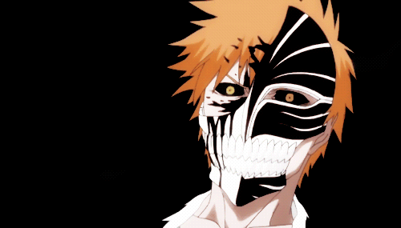
ICHIGO.
Ichigo Kurosaki es el protagonista del Manga y Anime Bleach. Todo comienza cuando recibe poderes de Shinigami a manos de Rukia Kuchiki, una Shinigami, hasta que Rukia recupere sus poderes, Ichigo debe hacer las labores de Shinigami Sustituto, combatiendo Hollows, purificarlos y realizando el entierro del alma a los plus, para que las almas de ambos sean llevadas a la Sociedad de Almas.
Leer mas
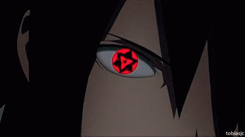
SASUKE.
Tanto en el manga como en el anime, Sasuke es un miembro del clan Uchiha, uno de los clanes ninja más fuertes de la Aldea Oculta de la Hoja, es el hermano menor de Itachi Uchiha y el padre de Sarada uchiha. Una vez se gradúa de genin, pasa a formar parte del Equipo 7, conformado por Naruto Uzumaki, Sakura Haruno y su maestro, Kakashi Hatake.
Leer mas